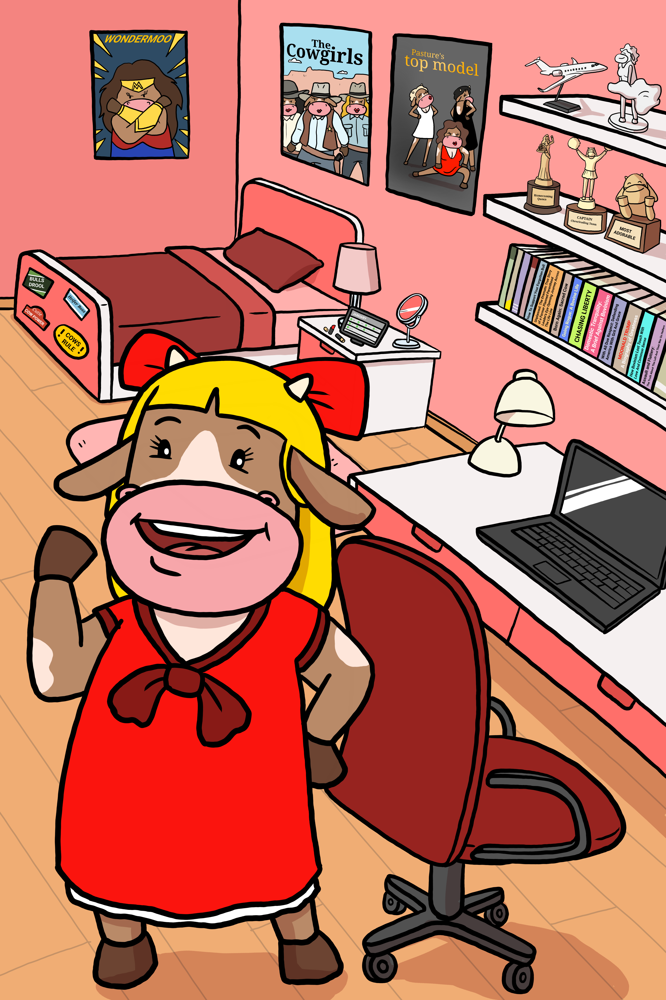

Imagine pulling up to a highway toll booth, and instead of paying a fixed $2 fee, the attendant asks you to bid against a hundred other drivers for the privilege of driving through first.
That is how gas fees work during peak traffic on congested base chains. If thousands of people try to mint NFTs or execute trades simultaneously, transaction fees spike from pennies to $40, and confirmations grind to a halt. Red Twin (Li)—named after light, energetic Lithium—has zero patience for waiting in line.
A Layer 1 blockchain like Ethereum is the supreme court of security—highly decentralized, robust, but inherently limited in transaction throughput. You wouldn't use the supreme court to adjudicate a parking ticket.
Layer 2 solutions (like Arbitrum, Optimism, or Polygon) and high-throughput chains like Solana act as regional express lanes. They process thousands of transactions off the main bottleneck, bundle them together, and write a single cryptographic proof back to the base layer. You get the ironclad security of Layer 1 with the speed of a credit card swipe.
When transaction costs drop below $0.001, entirely new business models become possible. You can stream fractions of a cent per minute to music artists, tip creators half a penny for an article, or automate tiny machine-to-machine payments without overhead. That is what Red Twin is racing toward.
💡 Herd Glossary: Layer 2 (L2)
A secondary network built on top of a base blockchain (Layer 1) that bundles transactions together to achieve high speed and fees under a penny while maintaining security.
The pasture is open. Learn crypto without the headache.
Herd up free.